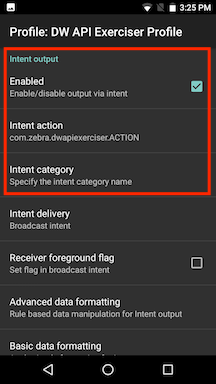
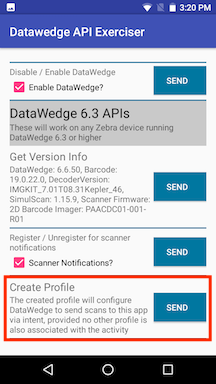

DataWedge API 示例应用程序演示直到版本 6.8（创建时的最新版本）的所有主要 DataWedge Intent API 的功能。要利用此示例应用程序，需要对 DataWedge 有基本的了解。有关 DataWedge API 的更多信息以及有关此示例应用程序的深入了解，请参阅 Zebra 工程师 Darryn Campbell 编著的 DataWedge API - 优势和使用场景一文（此 DataWedge API 示例源自此文）。
注意：此应用程序仅以演示为目的。它按原样提供（无保证或担保），可根据个人需求进行修改。
设置与此应用程序关联的 Datawedge 配置文件：
在“DataWedge 6.3 API”部分下的“创建配置文件”中，轻触“发送”命令。
检查是否使用以下设置在 DataWedge 中创建了名为“DW API 练习程序配置文件”的新配置文件：
 图 1：配置文件设置，屏幕 1
图 1：配置文件设置，屏幕 1
 图 2：配置文件设置，屏幕 2
安装并启动示例应用程序。API 功能按 DataWedge API 版本进行分类。要快速启动并运行，请在“DataWedge 6.3 API”部分中的“创建配置文件”选项下，轻触发送。这会在 DataWedge 中创建“DW API 练习程序配置文件”，并将此应用程序关联到该配置文件。它可以针对 Intent 广播进行注册，以从 DataWedge 接收扫描的数据。
 图 3：创建配置文件
轻触发送按钮以对任何命令执行操作。发送命令之后，一个弹出消息会出现，指示发送的命令的状态。扫描条码之后，会在顶部填充数据以及扫描源和解码器信息。